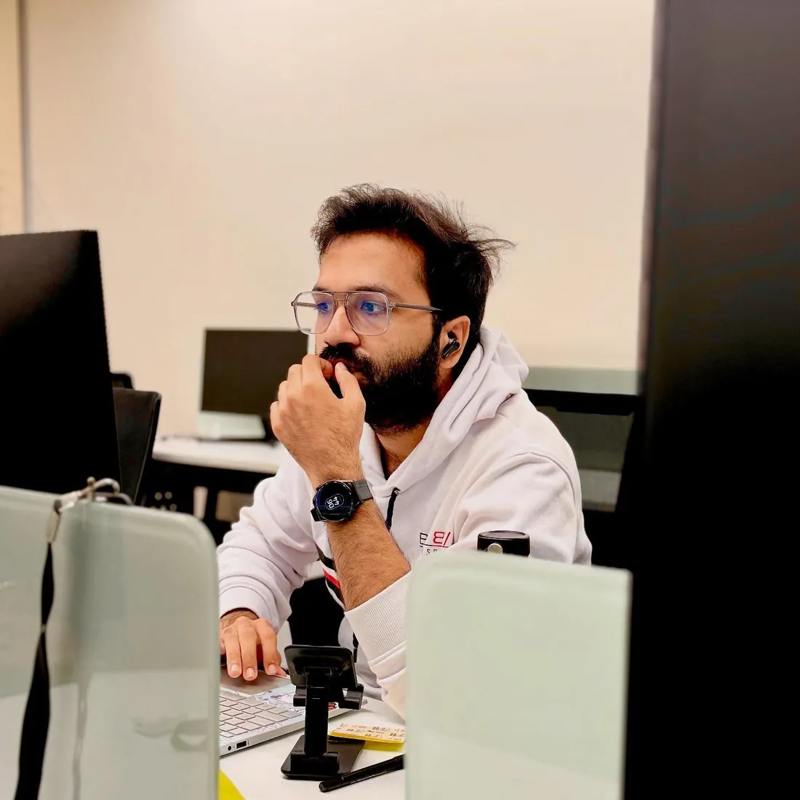
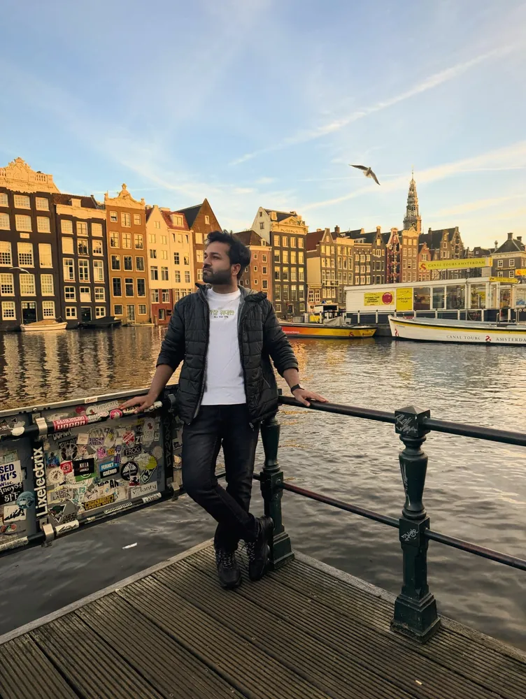
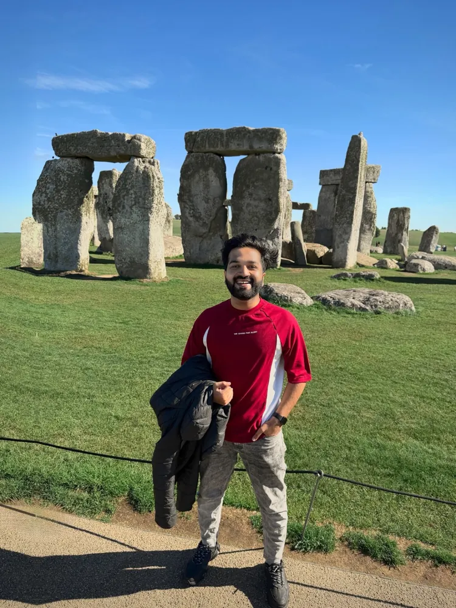
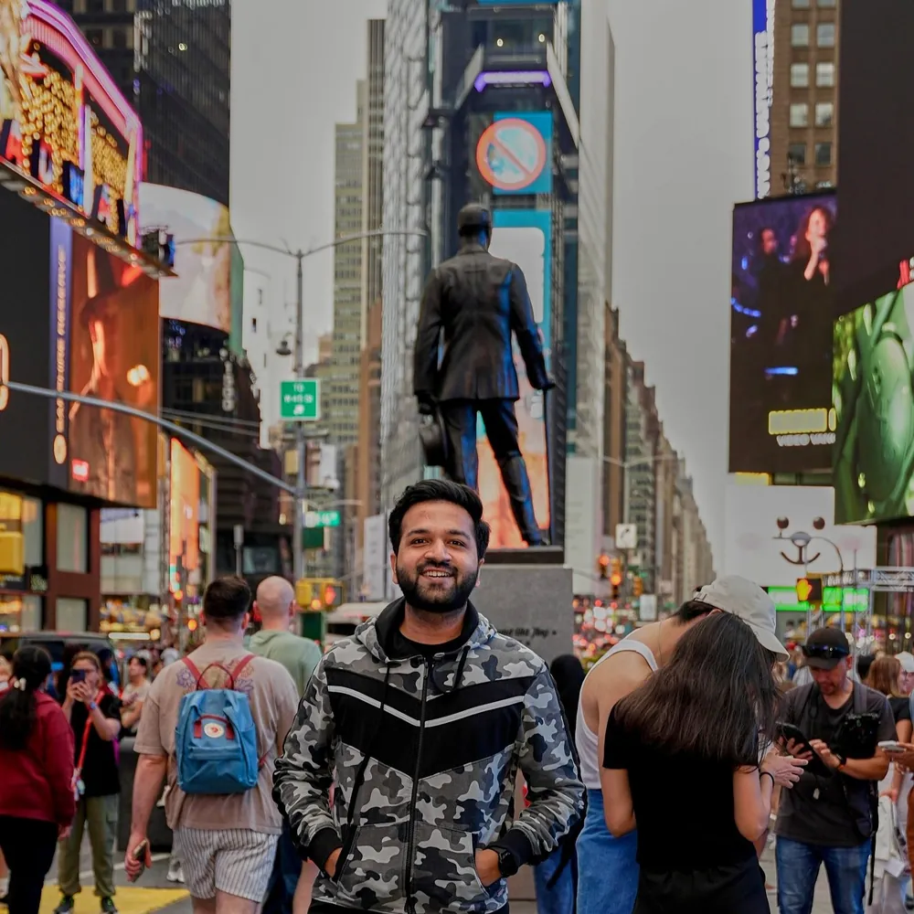
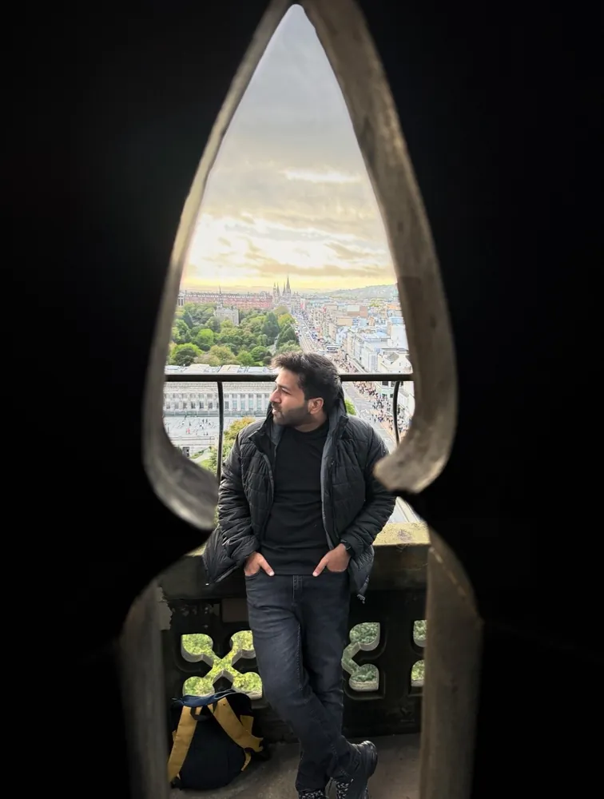
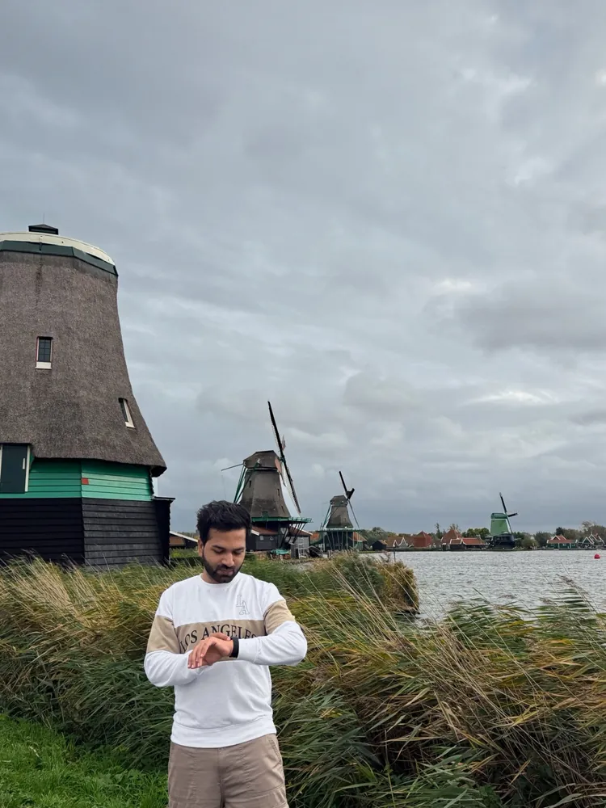
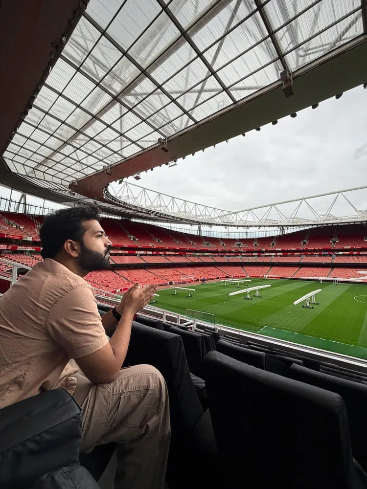
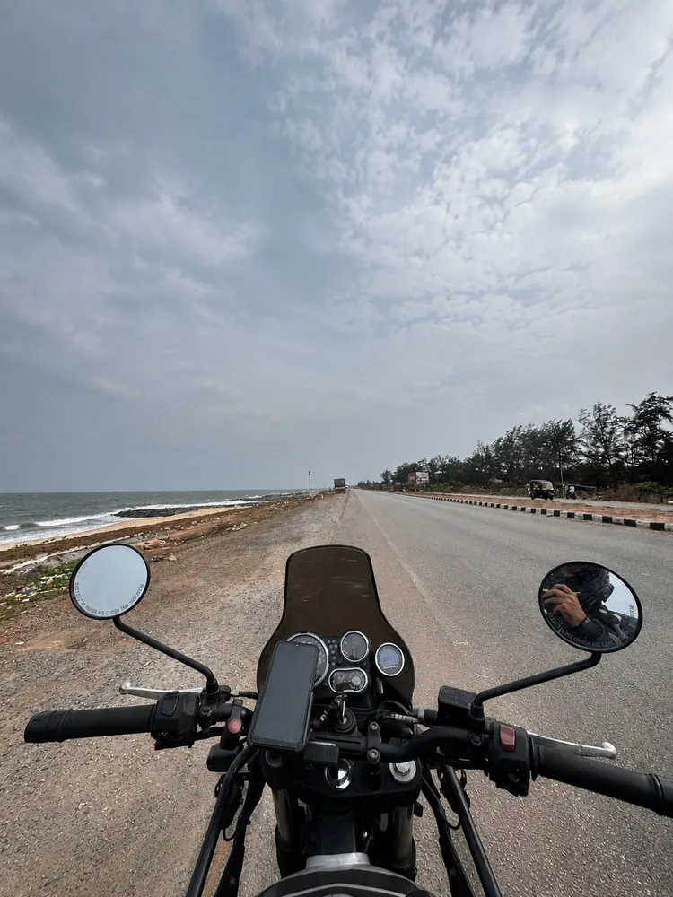
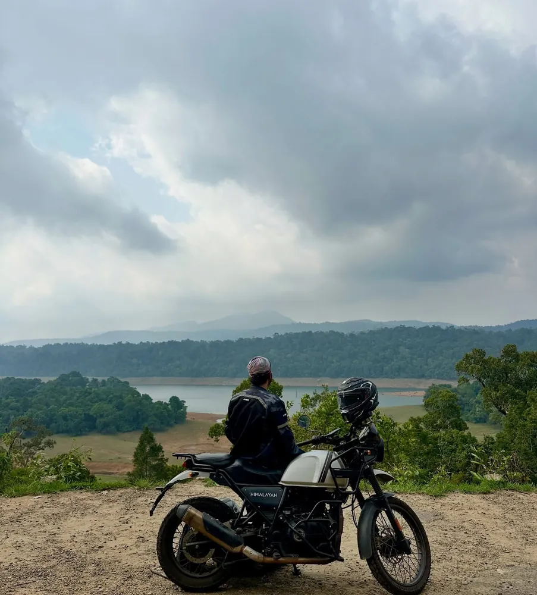
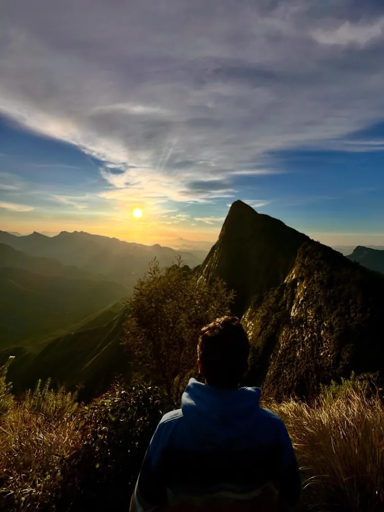

I test healthcare software for a living. Every other day I can find, I'm on a motorcycle or in a window seat, going somewhere I haven't been.
I grew up in Kasaragod, at the northern tip of Kerala. I've spent the last five years on the QA side of open source software that runs in Indian hospitals, and my leave days getting to twenty countries, mostly alone, mostly with one backpack.
- 20
- countries
- 5+
- years in QA
- 411
- cc, one Himalayan


The day job
I make sure the software holds up before a hospital depends on it.
I'm an SDE-II at eGov Foundation and on the core team at Open Healthcare Network. I write the Playwright tests behind CARE, an open source hospital system live in 11 Indian states, and keep its CI fast enough that developers actually run it.
- CAREHospital management system, a Digital Public Good
- 10BedICUTele-ICU linking 210+ rural hospitals to specialists
- Parallel Cypress on GitHub ActionsSomething I wrote about cutting test time
- Open source contributionsMy issues, pull requests and reviews
Playwright · Cypress · Selenium · Pytest · TypeScript · Python · GitHub Actions
The road
Twenty countries, mostly alone.
A few of the places I've stood in and stared at for too long.










The ride
A Himalayan 411 and no fixed plan.
Kerala to Goa down the coast road. Five hundred kilometres to Dhanushkodi, where India runs out of land. Up to Munnar in the dark to catch the sunrise over a bed of cloud.



On the side